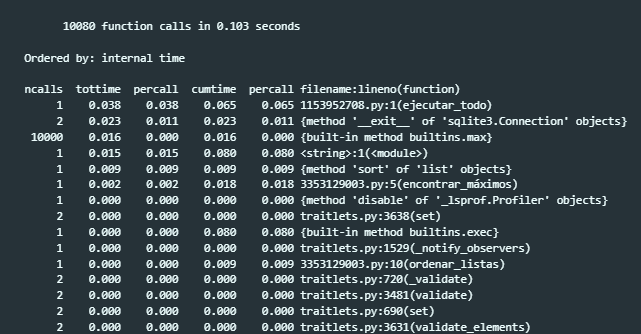

9. Comandos del sistema y comandos mágicos.#
Jupyer nos permite realizar operaciones que no están relacionadas directamente con el código de la celda sino que nos permite interactuar con otras partes del sistema de forma más efectiva. En este cuaderno revisaremos los comandos de sistema y los comandos mágicos.
9.1. Comandos del sistema#
Puedes usar el operador ! en Jupyter Notebook para ejecutar comandos del sistema operativo directamente desde una celda de código Python. Esto es útil para tareas como gestionar archivos, instalar paquetes o verificar configuraciones del sistema.
Warning
Estos comandos cambiarán dependiendo de tu sistema operativo ya que estamos usando la terminal nativa de cada uno de ellos.
Listar archivos en el directorio actual.
!ls
"ls" no se reconoce como un comando interno o externo,
programa o archivo por lotes ejecutable.
!dir
El volumen de la unidad E es Datos
El n£mero de serie del volumen es: 74BF-F4C5
Directorio de E:\Desarrollos\CoE Jupyter notebook\CoE_Ciencia_de_Datos\1_Introduccion_Python\sesion_2
23/02/2024 04:48 p. m. <DIR> .
04/03/2024 09:59 a. m. <DIR> ..
01/03/2024 05:07 p. m. 7,803 02_01-Control_Flujo_Funciones.ipynb
01/03/2024 05:07 p. m. 9,358 02_03-Debugging_en_Python.ipynb
01/03/2024 05:07 p. m. 5,102 02_04-Manipulacion_OS.ipynb
01/03/2024 05:07 p. m. 8,153 02_05_Programacion_Orientada_Objetos.ipynb
01/03/2024 05:07 p. m. 19,607 02_09-Comandos_Magicos.ipynb
01/03/2024 05:07 p. m. 2,053 02_10-Evaluacion_S2.ipynb
04/03/2024 10:17 a. m. 0 archivo_ejemplo.txt
23/02/2024 08:23 a. m. 8,819 breakpoint.png
23/02/2024 08:25 a. m. 46,049 breakpoint_2.png
23/02/2024 08:26 a. m. 2,249 controls.png
23/02/2024 08:23 a. m. 8,021 debug.png
23/02/2024 08:26 a. m. 5,597 debug_console.png
23/02/2024 08:24 a. m. 11,985 debug_menu.png
04/03/2024 10:17 a. m. 12 ejemplo.txt
01/03/2024 04:58 p. m. 31 mi_archivo.txt
21/02/2024 04:10 p. m. 29,107 output_prun.png
16 archivos 163,946 bytes
2 dirs 971,181,666,304 bytes libres
Obtener las versiones de python.
Warning
Esto funciona sólo si python está en tus variables de entorno de modo que la palabra python llama a tu versión del ejecutable de Python.
!python --version
Python 3.12.1
Instalar una librería. Este es por mucho el caso de uso más común porque puedes poner esto al inicio de cada notebook para instalar todo lo necesario para correrlo.
También se puede hacer desde un archivo de requerimientos como se verá en la sección 3.1.
# !pip install pickleshare
Usar variables para realizar comandos del sistema (sólo se puede en sistemas que tengan echo).
nombre_archivo = "mi_archivo.txt"
!echo "Este es un texto de prueba" > {nombre_archivo}
9.2. Comandos mágicos#
Los comandos mágicos en Jupyter Notebooks ofrecen funcionalidades prácticas para diversas tareas como la gestión de tiempo, la escritura y ejecución de código en diferentes lenguajes, y la manipulación de la salida.
Son precedidos por el signo % para comandos mágicos de línea, o %% para comandos mágicos de celda.
En la documentación de IPython se puede ver una lista de todos los comandos mágicos.
También podemos imprimir la lista de los que están disponibles para nosotros con el comando de línea %lsmagic.
%lsmagic
Available line magics:
%alias %alias_magic %autoawait %autocall %automagic %autosave %bookmark %cd %clear %cls %code_wrap %colors %conda %config %connect_info %copy %ddir %debug %dhist %dirs %doctest_mode %echo %ed %edit %env %gui %hist %history %killbgscripts %ldir %less %load %load_ext %loadpy %logoff %logon %logstart %logstate %logstop %ls %lsmagic %macro %magic %mamba %matplotlib %micromamba %mkdir %more %notebook %page %pastebin %pdb %pdef %pdoc %pfile %pinfo %pinfo2 %pip %popd %pprint %precision %prun %psearch %psource %pushd %pwd %pycat %pylab %qtconsole %quickref %recall %rehashx %reload_ext %ren %rep %rerun %reset %reset_selective %rmdir %run %save %sc %set_env %store %sx %system %tb %time %timeit %unalias %unload_ext %who %who_ls %whos %xdel %xmode
Available cell magics:
%%! %%HTML %%SVG %%bash %%capture %%cmd %%code_wrap %%debug %%file %%html %%javascript %%js %%latex %%markdown %%perl %%prun %%pypy %%python %%python2 %%python3 %%ruby %%script %%sh %%svg %%sx %%system %%time %%timeit %%writefile
Automagic is ON, % prefix IS NOT needed for line magics.
9.2.1. Atravesando el sistema de archivos#
Para imprimir el directorio actual usamos el siguiente comando.
%pwd
'E:\\Desarrollos\\CoE Jupyter notebook\\CoE_Ciencia_de_Datos\\1_Introduccion_Python\\sesion_2'
Para cambiar de directorio podemos usar el siguiente comando.
%cd ../
E:\Desarrollos\CoE Jupyter notebook\CoE_Ciencia_de_Datos\1_Introduccion_Python
9.2.2. Medir tiempo con time, timeit y prune#
Otra operación muy común es ver el tiempo de ejecución de un pedazo de código, esto es útil para saber comparar varias implementaciones.
Para esto tenemos dos comandos: time y timeit.
Definiremos las siguientes funciones para probar que tan eficientes son.
def calcular_suma(n):
"""Calcula la suma de los números hasta n."""
return sum(range(n))
def encontrar_máximos(listas):
"""Encuentra el valor máximo en cada sublista."""
máximos = [max(lista) for lista in listas]
return máximos
def ordenar_listas(listas):
"""Ordena las listas según la suma de sus elementos."""
listas.sort(key=sum)
return listas
%time calcular_suma(1_000_000)
CPU times: total: 0 ns
Wall time: 31.2 ms
499999500000
%%timeit
# Código para perfilar
n = 10000
listas = [[j for j in range(i, i + 100)] for i in range(1, n, 100)]
máximos = encontrar_máximos(listas)
606 µs ± 39 µs per loop (mean ± std. dev. of 7 runs, 1,000 loops each)
def ejecutar_todo(n):
listas = [[j for j in range(i, i + 100)] for i in range(1, n, 100)]
máximos = encontrar_máximos(listas)
listas_ordenadas = ordenar_listas(listas)
return máximos, listas_ordenadas
%prun ejecutar_todo(1_000_000)

9.2.3. history#
Para obtener el historial de entradas usamos %history -n (numero de lineas) -f (ruta_archivo).
Si no especificamos la bandera -f se imprime el resultado.
%history -n 1-15
1: !ls
2: !dir
3: !python --version
4: # !pip install pickleshare
5:
nombre_archivo = "mi_archivo.txt"
!echo "Este es un texto de prueba" > {nombre_archivo}
6: %lsmagic
7: %pwd
8: %cd ../
9:
def calcular_suma(n):
"""Calcula la suma de los números hasta n."""
return sum(range(n))
def encontrar_máximos(listas):
"""Encuentra el valor máximo en cada sublista."""
máximos = [max(lista) for lista in listas]
return máximos
def ordenar_listas(listas):
"""Ordena las listas según la suma de sus elementos."""
listas.sort(key=sum)
return listas
10: %time calcular_suma(1_000_000)
11:
%%timeit
# Código para perfilar
n = 10000
listas = [[j for j in range(i, i + 100)] for i in range(1, n, 100)]
máximos = encontrar_máximos(listas)
12:
def ejecutar_todo(n):
listas = [[j for j in range(i, i + 100)] for i in range(1, n, 100)]
máximos = encontrar_máximos(listas)
listas_ordenadas = ordenar_listas(listas)
return máximos, listas_ordenadas
%prun ejecutar_todo(1_000_000)
13: %history -n 1-15
9.2.4. capture#
Hay veces que queremos tomar la salida de una celda y hacer análisis sobre ella. Como cuando queremos analizar logs de algún proceso. Para realizar esto dentro de un notebook usamos el comando.
%%capture nom_variable
# código a capturar
donde accedemos al código capturado llamando el siguiente método.
nom_variable.show()
%%capture captured_output
for i in range(5):
print("La línea "+ str(i) + " se capturará")
captured_output.show()
La línea 0 se capturará
La línea 1 se capturará
La línea 2 se capturará
La línea 3 se capturará
La línea 4 se capturará
9.2.5. env#
Para leer o escribir variables de entorno usamos el siguiente comando.
%env os
'Windows_NT'
Para mostrar la historia de directorios visitados usamos:
%dhist
Directory history (kept in _dh)
0: E:\Desarrollos\CoE Jupyter notebook\CoE_Ciencia_de_Datos\1_Introduccion_Python\sesion_2
1: E:\Desarrollos\CoE Jupyter notebook\CoE_Ciencia_de_Datos\1_Introduccion_Python